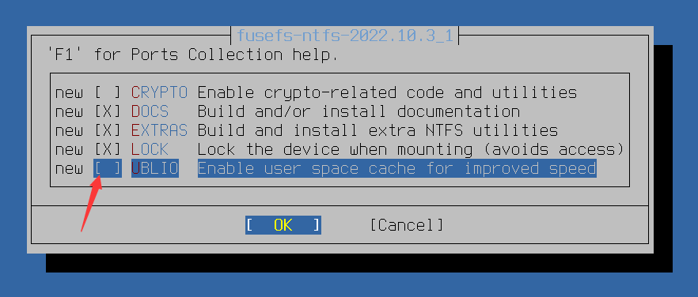

Windows 文件系统
Table of Contents
FreeBSD 对
- NTFS 的原生支持仅限只读，读写操作需借助用户态驱动 ntfs-3g
- FAT32 则由内核原生支持读写
目录结构
/
├── usr
│ ├── local
│ │ └── bin
│ │ └── ntfs-3g # NTFS-3G 可执行文件
│ └── ports
│ └── filesystems
│ └── ntfs # ntfs-3g Ports 目录
├── etc
│ ├── rc.conf # 系统启动配置文件
│ └── fstab # 持久化挂载配置文件
├── dev
│ ├── da0 # 磁盘设备
│ └── da0s1 # NTFS 分区
├── media
│ └── NTFS # NTFS 挂载点
└── mnt
├── NTFS # NTFS 挂载点（备用）
└── (通用挂载点)
NTFS 文件系统
安装 ntfs-3g
UBLIO（User space Block I/O）是一个用户空间块 I/O 库，用于提升 FUSE 文件系统的性能 然而，UBLIO 在 FreeBSD 环境下与 ntfs-3g 协同工作时，可能引发文件系统损坏及数据丢失风险（参见 Bug 206978 与 Bug 194526）
因此，不建议采用 pkg 二进制安装方式，而应通过 Ports 系统进行源代码编译：
$ cd /usr/ports/filesystems/ntfs $ make config

取消勾选 UBLIO 选项后，再执行编译安装：
$ make BATCH=yes install clean
配置 ntfs-3g
将 NTFS 格式的硬盘或 U 盘插入计算机。此时可观察到其设备名称
例如 da0（对应设备文件为 /dev/da0）
编辑 /etc/rc.conf 配置文件，将 fusefs 内核模块添加至系统启动加载列表：
$ sysrc kld_list+="fusefs"
创建 NTFS 分区
可以在 MBR 或 GPT 分区表上创建 NTFS 分区：
MBR 分区表方案
gpart create 将清除目标磁盘上现有的分区表，原有分区和数据将不可恢复 请务必确认磁盘设备（如 da0）正确无误
$ gpart create -s mbr da0 # 在 da0 磁盘上创建 MBR 分区表，若磁盘已为 MBR 分区表，则可跳过此步骤 $ gpart add -t ntfs da0 # 在 da0 磁盘上添加 NTFS 类型的分区
GPT 分区表方案
$ gpart create -s gpt da0 # 在 da0 磁盘上创建 GPT 分区表，若磁盘已为 GPT 分区表，则可跳过此步骤 $ gpart add -t ntfs da0 # 在 da0 磁盘上添加 NTFS 类型的分区
格式化 NTFS 分区
mkntfs 将对指定分区执行格式化，分区上所有数据将永久丢失 请确认设备路径 /dev/da0s1 正确无误
在 /dev/da0s1 分区上创建 NTFS 文件系统：
$ mkntfs -vf /dev/da0s1
参数说明：
- -f：表示快速格式化
- -v：表示显示详细输出信息
NTFS 的自动挂载配置
如果要开机自动挂载，需修改 /etc/fstab 配置文件，添加如下内容：
/dev/da0s1 /media/NTFS ntfs rw,mountprog=/usr/local/bin/ntfs-3g,late 0 0
该配置将 /dev/da0s1 分区挂载至 /media/NTFS 目录
配置中使用 ntfs-3g 驱动以读写模式挂载，*late* 选项表示延迟挂载，即等待系统基本启动完成后再执行挂载操作，避免因设备未就绪导致的启动问题
NTFS 的手动挂载操作
手动挂载 NTFS 分区可通过以下方式：
使用 ntfs-3g 将 /dev/da0s1 挂载至 /media/NTFS，设置读写权限，并指定文件属主和权限掩码：
$ ntfs-3g /dev/da0s1 /media/NTFS -o rw,uid=1000,gid=1000,umask=0
如果不确定哪块磁盘分区为 NTFS 格式，可使用以下命令检测 /dev/da0s1 分区的文件系统类型：
$ fstyp /dev/da0s1
如果在挂载过程中出现错误，可尝试删除休眠文件:
$ ntfs-3g /dev/da0s1 /mnt/NTFS -o remove_hiberfile
remove_hiberfile 将删除 Windows 休眠文件（hiberfil.sys），Windows 中未保存的会话数据将永久丢失 请确认 Windows 已完全关机（而非休眠），且不再需要恢复休眠状态
如果上述方法仍无法解决问题，可尝试修复 /dev/da0s1 上的 NTFS 文件系统错误（轻量级修复，功能类似 Windows 系统的 chkdsk）
$ ntfsfix /dev/da0s1
ntfsfix 将修改 NTFS 文件系统元数据并清除脏标记，可能导致 Windows 下次启动时执行 chkdsk 在文件系统严重损坏的情况下，此操作可能加剧数据丢失。请先备份重要数据
FAT32 文件系统
在使用 gpart show 命令时，FAT32 文件系统通常显示为 ms-basic-data 类型。以下命令显示 nda1 磁盘及其分区的详细信息，包括起始位置、大小和类型：
$ gpart show -p nda1 # 已忽略其他无用输出信息 => 34 41942973 nda1 GPT (20G) 29360128 4194304 nda1p3 ms-basic-data (2.0G) # 即为 FAT32
将 /dev/nda1p3 分区挂载为 msdosfs 文件系统，并显示挂载过程的详细信息：
$ mount -v -t msdosfs /dev/nda1p3 /mnt # 测试挂载。-v 参数用于显示详细信息（Verbose）；-t 参数用于指定文件系统类型 /dev/nda1p3 on /mnt (msdosfs, local, writes: sync 1 async 0, reads: sync 512 async 0, fsid 7d00000032000000, vnodes: count 1 ) $ ls /mnt/ # 列出挂载目录下的内容 me test1 test2 $ umount /mnt # 卸载文件系统
必须显式声明文件系统类型才能进行挂载操作
| Next: swap 分区 | Previous: Linux 文件系统 | Home: 存储管理 |